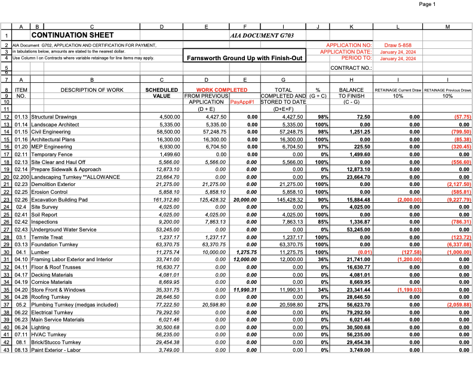
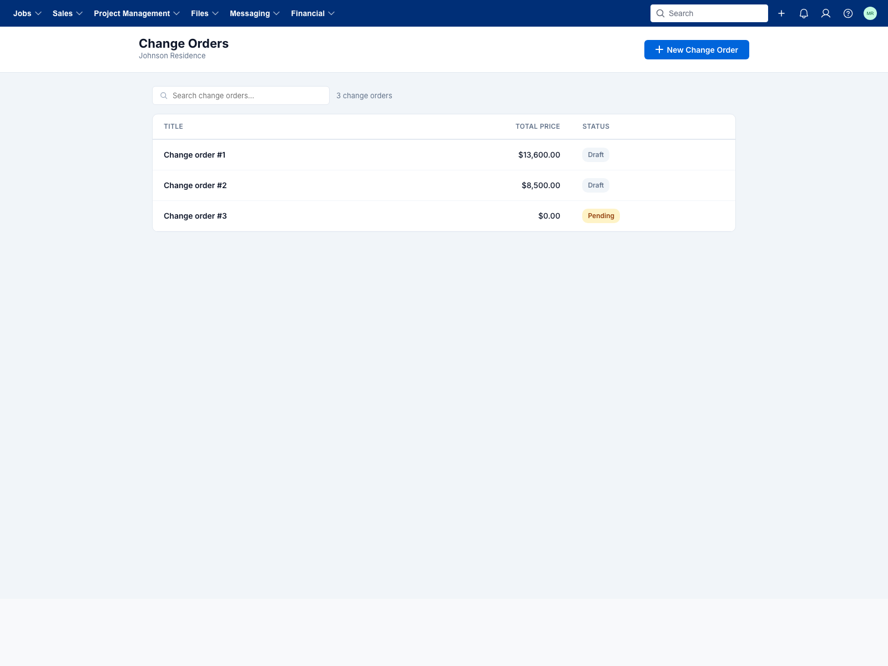
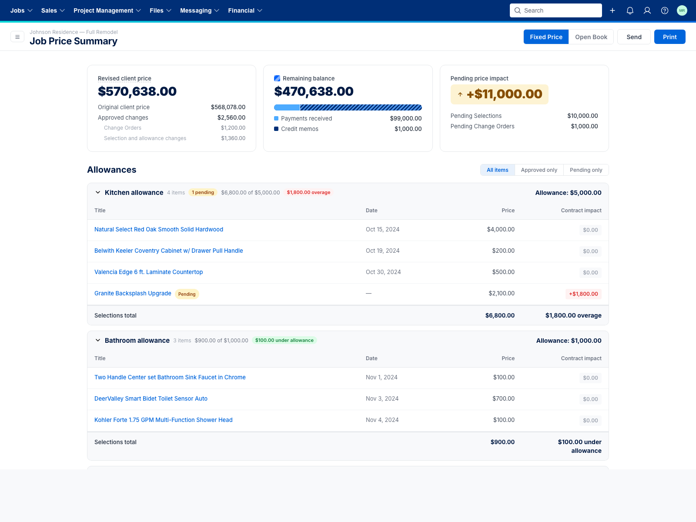

Progress Invoicing
Designing progress invoicing that builders actually adopt — AIA-style continuation sheets, change orders, open-book costs, and the messy realities of mid-job financials. Built release by release with a CAB of real builders.
The problem
Builders use progress invoicing as the contractual billing format on commercial and high-end residential jobs — banks, architects, and clients expect it in a specific shape (AIA G702/G703). When Buildertrend's progress invoicing can't produce that shape cleanly, builders abandon the workflow and run their billing in Excel or Procore instead.
The Ship of Theseus team's job is making that workflow complete enough — and trustworthy enough — that builders don't export out. Every release closes another reason a builder would choose Excel over Buildertrend.

How many builders still produce pay applications today — a hand-built Excel spreadsheet maintained outside Buildertrend.
Discovery
Research ran alongside development, not before it. We worked with a CAB of ~10 builders — Maze card sorts, interviews, and in-session reviews of working releases. The goal was to separate must-haves (release blockers) from nice-to-haves (second-pass polish).
What the CAB told us (Jan–Feb 2026)
Must solve
- Client preview of invoices
- Progress invoices on in-flight jobs
- $ amount entry (not just %)
- Client send notifications
- Buildertrend Payments
- Retainage (8 / 14 builders)
Nice to have
- Draw package — PDF + attachments ordered by cost code (7 / 14)
- Cover sheet (G702)
- Auto-generated change orders for overages
- Lien waivers (5 / 14)
A few signals mattered more than the rest:
- Retainage is a release blocker — for the minority who need it. Fewer builders use retainage than lien waivers, but the ones who do are hard-blocked without it.
- Change orders are the ambient complexity. Every builder's job has them. Between layout preferences, billing them with their own markup, and timing against actual costs, COs sat inside almost every bit of feedback.
- Clients can't see what's coming. Builders were sending invoices before work was complete just so clients had visibility — which broke release dates and muddied the audit trail.
What builders actually said
"Retainage is hard to deal with in Buildertrend right now… you have to keep a separate spreadsheet just for retainage." — Billy Anderson, Waters Building and Design
"Retainage needs to be auto-calculated… sometimes 10% on labor but 0% on materials." — Andrew Couchey, Riggs Custom Builders
"The owner's reps are lazy… they just want a PDF that can be a G702, G703, or a budget — and then they want all the backup in order of cost code." — Todd Christensen, builder interview
"I like the idea of progress billing and really want to implement it in our system, however the system hasn't updated my Change Order into this." — Cassie Bayes, Bayes Building Group
"You bring on new features, but never really show how they should be used in relationship to everything else." — Cindy Roth, Beyond Custom Contracting (on onboarding)
Design decisions
The through-line on every decision: preserve how the builder already thinks about the job, and surface change-order / cost complexity without making the default flow any harder to read.
Change orders as rows, not columns
A Maze survey with 9 builders asked how they wanted approved change orders to show up on the invoice: as extra columns next to each line item, or as their own grouped row within the cost code? Six of nine preferred grouped rows. Columns would also have blocked our ability to persist estimate-group layouts — which another 5 of 9 builders prioritized over any layout preference. So: rows won. Change orders always appear in their own section regardless of which grouping view is active.

Change Orders for a job — approved COs flow into the progress invoice as grouped rows without re-entry.
Group by cost code or estimate group
Builders think about jobs two ways: the auditor's way (cost
code) and their own way (estimate group — framing, foundation,
finishes). Both are right for different audiences. The
invoice supports both layouts with a single toggle, and the
chosen strategy persists per invoice in
InvoiceMetadata.LineItemGroupStrategy — the
hierarchy assembles client-side, so the toggle is instant.
Open Book: costs set a floor, not a cage
When Open Book costs flow in (bills, time-clock, accounting), they raise the floor on each cost code's % complete — a builder can't under-invoice what their team has already worked. Cost rows themselves are read-only; the remaining balance is proportionally editable across estimate items. It's guardrails, not handcuffs.
Selection overages → approved changes, not billing drift
When a selection comes in over allowance on the same cost code, we invoice only the overage and surface it under Approved changes alongside COs — preserving the estimate-group layout and avoiding double-count. When the selection moves to a different cost code, we credit the allowance and invoice the full amount under the new code so the job totals still reconcile to zero.
Client visibility — the closing gap
The thread we kept hearing from builders: clients want to see what's coming, not just what they've already paid. Builders were releasing invoices early as a hack for this. We're closing that loop with a client-facing financial summary that shows pending invoices, pending selections, and the change-order impact before anything gets billed.

Client view of the job price summary — revised client price, remaining balance, pending impact, and selections with allowance overages.
Prototype
The prototype below is where design decisions get stress-tested against real data shapes. Toggle the grouping, click into a row, open the change-order flow.
Open prototype in new tab: bt-invoice.vercel.app/#progress-invoice ↗
What we've shipped
- Continuation sheet (G703-style SOV) — limited release Nov 2025
- Invoicing by dollar amount — GA March 2026
- Invoice Activity Log — GA April 2026
- Change orders as grouped rows — approved COs appear in-line without re-entry
- Grouping toggle — cost code vs. estimate group
- Costs on progress invoices (Open Book) — bills, time-clock, accounting, with cost floors
- Mobile responsiveness across invoice flows
What's next
Q2 2026:
- Open Book progress invoicing — release 4/24
- R1.6 — Adding costs to progress invoices
- R1.7 — Selection invoicing on progress invoices
- R1.8 — Online payments for progress invoices
One of the research findings we debated hardest: should progress invoices support in-flight jobs? Our early assumption was yes — it's a big adoption wedge. But the CAB told us builders have workarounds that feel tolerable (standard invoices until the next job starts; manually entering previous-invoice totals). So we made the call to ship what we have to new jobs first and keep in-flight migration as a future option for new builders onboarding into Buildertrend.
How we're measuring it
"15 CO+ builders agree that client financials are no longer an adoption blocker." — Ship of Theseus Q2 2026 goal
This is an outcome metric, not an output one. We're watching a few leading indicators to know we're on track:
- Percentage of builders creating multiple progress invoices per job
- Percentage released (not just created)
- Adoption on in-flight jobs (via workaround)
- Time from first invoice creation to first release
The live risk: recruiting. Talking to 15 CO+ builders takes more work than the number suggests — that segment is busy and harder to schedule. That constraint shapes how much we rely on quick-turn Maze surveys vs. deep interviews, and why the CAB relationship matters so much.